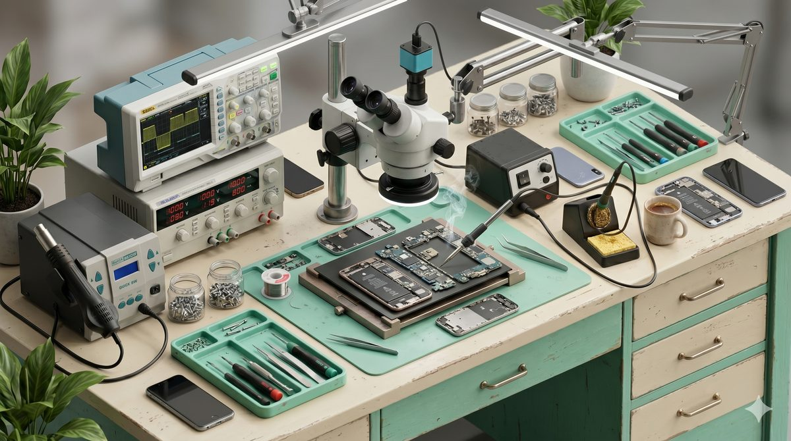

Reparații Telefoane Cluj-Napoca
Reparații telefoane, laptopuri, tablete și gadgets. Microsoldering. Str. Eroilor 17, ROKA Premium Center.
Din Cluj-Napoca până la noi: 5 minute
Suntem în Florești, la prima ieșire din Cluj spre Oradea. Cât stai în trafic până în centru, ajungi la noi cu drum liber — și cu parcare la ușă, în ROKA Premium Center.
Și merită drumul: facem microsoldering, reparații la nivel de componentă sub microscop. Telefonul pe care un service din oraș ți l-a dat înapoi cu „nu se poate", la noi are o șansă reală.
Ce reparăm:
- Microsoldering — reparații pe placa de bază, sub microscop
- iPhone X→17 și Samsung S8→S26 (plus Huawei, Xiaomi)
- Laptopuri, tablete și console
- Recuperare date din telefoane care nu mai pornesc
- Telefoane noi și second-hand, cu garanție
- Huse, folii, încărcătoare, cabluri
Diagnostic gratuit. Îți spunem ce are și cât costă, și reparăm doar cu acordul tău.

Unde ne găsiți
Str. Eroilor 17, ROKA Premium Center, Florești, Cluj
Program: Luni - Vineri 10:00 — 20:00
Telefon: 0750 605 905
De ce OnixGSM?
Microsoldering
Puține service-uri din zonă fac asta. Reparăm plăci de bază, chipset-uri și porturi HDMI pe console — la nivel de componentă.
Prețuri transparente
Prețuri publicate pe site, cu TVA inclus. Diagnostic GRATUIT. Fără surprize.
Garanție până la 24 luni
Certificat de garanție la fiecare reparație. Piese originale și compatibile de calitate.
Service GSM la 5 minute de Cluj-Napoca
La 5 minute de ieșirea din Cluj spre Oradea. Deservim: Cluj-Napoca (Mănăștur, Gheorgheni, Mărăști, Zorilor, Grigorescu), Florești, Baciu, Gilău, Apahida, Chinteni.